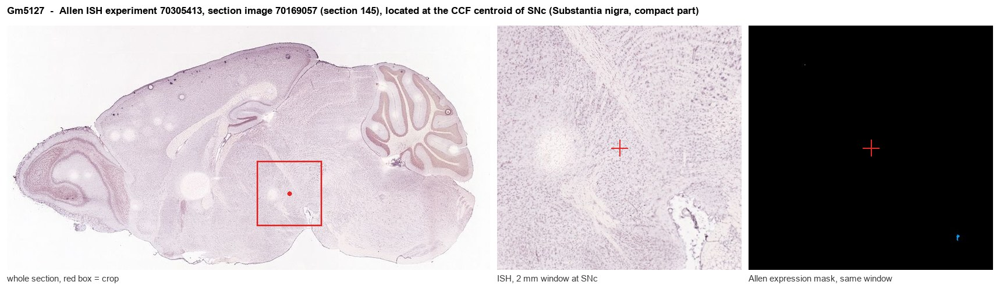
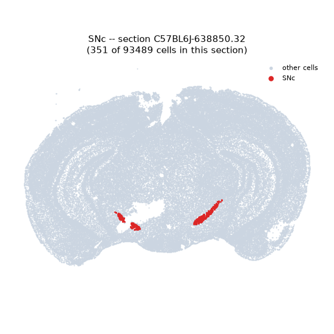
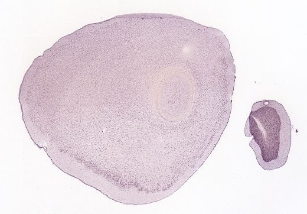
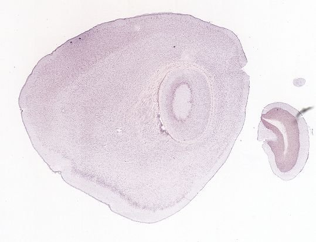
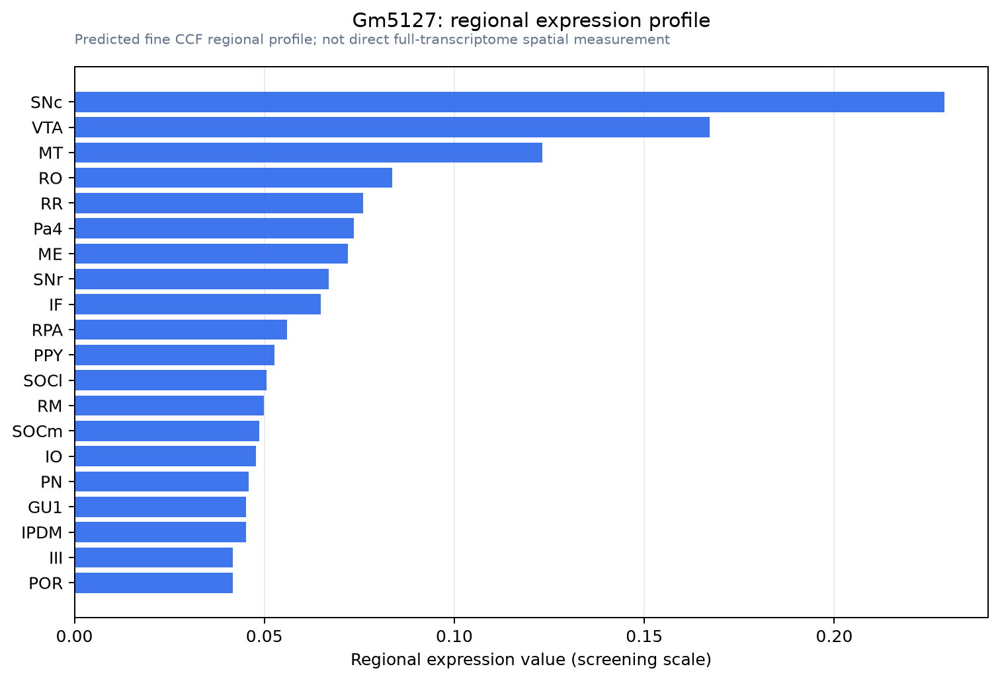

Gm5127
Predicted gene 5127
Spatial tier: STRICT_EXCLUSIVE · Class: GPCR · Top region: SNc (Substantia nigra, compact part) · Positive regions: 8/554
47.6Discovery Score
37.7Targetability Score
CEvidence grade C
What this means: Gm5127: predicted fine-region profile is strict-exclusive, with 8 positive regions out of 554 (limit 12); direct spatial validation is required.
Function in SNc: evidence, prediction, innovation
- Gene function
- Gm5127 (synonyms B130007I08, EG331493; UniProt Q3UQH6) is a protein-coding predicted gene on mouse chromosome X encoding a rhodopsin-like class-A GPCR (InterPro IPR017452, GPCR family 1). It sits in the P2Y-like cluster overlapping Cysltr1 and near Lpar4, with one rat ortholog (LOC100359656) and no human ortholog, so it is likely a rodent-specific orphan receptor.
- Region function
- The substantia nigra pars compacta contains the A9 dopamine neurons projecting to dorsal striatum that control movement vigour, action selection and reinforcement learning; their degeneration causes Parkinson's disease.
- Published in this region
- none No region-specific literature found. No PubMed paper addresses Gm5127 in brain; MGI lists 597 GXD assay results across embryonic tissues and IMPC reports five knockout phenotypes limited to haematopoietic and metabolic parameters, with no neural or behavioural data.
- Predicted function
- Prediction: as an orphan class-A GPCR in the cysteinyl-leukotriene/P2Y cluster, Gm5127 in SNc dopamine neurons would plausibly be Gi/o- or Gq-coupled and respond to a nucleotide or lipid released during injury, modulating firing or dopamine release. Knockout would likely spare baseline motor behaviour but alter dopamine-neuron vulnerability after inflammatory or toxin challenge.
- Innovation
- ★★★☆☆ 3/5 Completely unstudied orphan GPCR in a key region with a knockout already available, but rodent-specific biology and no ligand reduce impact and feasibility.
- Tools
- KOMP targeted allele Gm5127 tm2e(KOMP)Wtsi and IMPC knockout line; no ligand, antibody or Cre driver known.
- References
Direct evidence located at the region

Allen ISH experiment 70305413, section image 70169057 (section 145): the section that contains the CCF centroid of Substantia nigra, compact part according to the Allen image-to-atlas alignment (reference_to_image), with a 2 mm window around that point. Left: whole section, red box = window. Middle: ISH signal. Right: Allen's expression-mask view of the same window. open this image in the Allen viewer
Look it up yourself: Allen Mouse Brain ISH for Gm5127Allen reference atlas: SNc (structure 374)ABC Atlas MERFISH viewer(in the ABC Atlas choose dataset MERFISH-C57BL6J-638850-CCF, colour cells by gene "Gm5127" or by parcellation_substructure "SNc")All genes confined to SNc + 3-D brain
Direct spatial evidence
MERFISH REGION LOCATOR

DIRECT ALLEN ISH

DIRECT ALLEN ISH

Regional expression figure

Predicted WMB × fine-CCF profile; not direct full-transcriptome spatial measurement.
Spatial profile
Evidence and specificity
- Evidence status
- PREDICTED_FINE
- Direct sources
- None; predicted localization only
- Exclusive threshold
- 12 positive regions out of 554
- Spatial specificity
- 0.375
- Top-region fraction
- 0.134
- Filter status
- PASS
Interpretation limits
- Cell-type-to-region projection is imputed expression, not direct spatial measurement.
- Adult reference atlases do not establish stability across age, sex, strain, state, or disease.
- Transcript abundance does not guarantee protein abundance or genetic-tool performance.